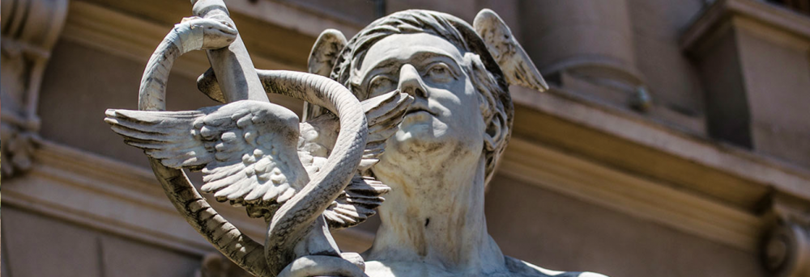

Cultura de Jujuy
Inicio
Museos
Contacto
Lista de Museos de Jujuy
Cabildo
Dirección: Gral. Belgrano 493, San Salvador de Jujuy
Centro de Interpretación de la Bandera Nacional de la Libertad Civil y Experiencia Éxodo
Dirección: General San Martín 450, San Salvador de Jujuy
Estatuas de Lola Mora

Dirección: General San Martín 450, San Salvador de Jujuy
Museo Arqueológico Eduardo Casanova
Dirección: Belgrano 445, Tilcara
Museo de Arte Sacro San Francisco
Dirección: Belgrano 677, San Salvador de Jujuy
Museo de las Ermitas
Dirección: Rivadavia, entre Jujuy y Ambrosetti, Tilcara
Museo Histórico Provincial Juan Galo Lavalle
Dirección: Lavalle 256, San Salvador de Jujuy
Museo Posta de Hornillos
Dirección:RN9 a 10km de Tilcara
Museo Soto Avedaño
Dirección: Belgrano s/n, Tilcara
]
 Dirección: Gral. Belgrano 493, San Salvador de Jujuy
Dirección: Gral. Belgrano 493, San Salvador de Jujuy